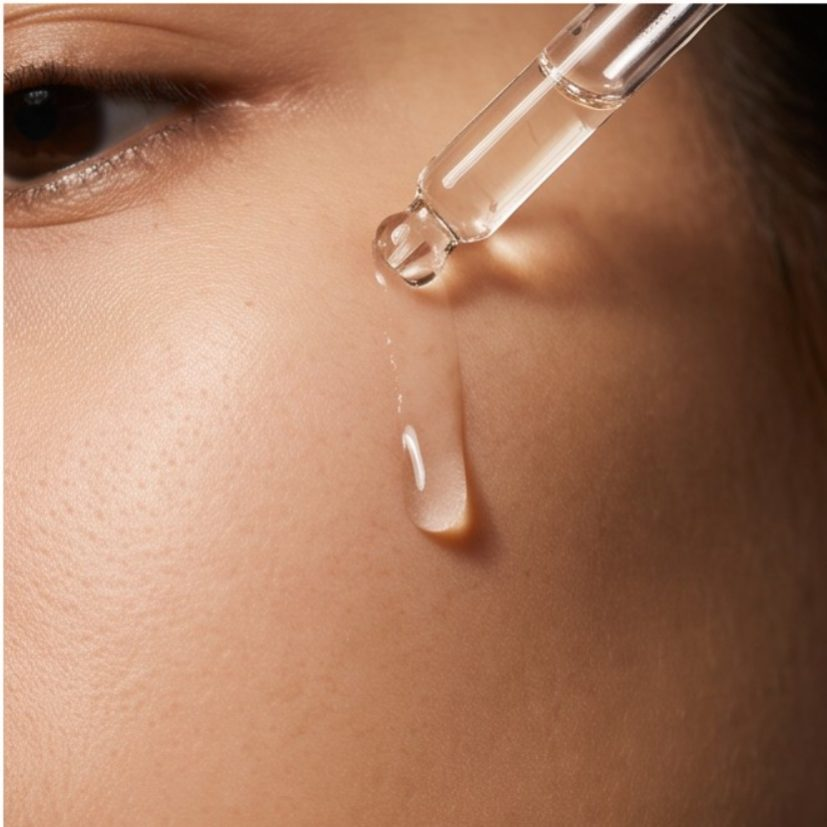

01
Face wash
Use a gentle, sulphate-free cleanser. Massage for 30 to 60 seconds, rinse with lukewarm water and pat dry.

02
Toner
Apply a few drops with clean hands or a cotton pad. Choose an alcohol-free formula.

03
Serum
Two to three drops on damp skin. Vitamin C is a popular morning choice. Start slowly if your skin is sensitive.

04
Moisturiser
A light layer, even for oily skin. A gel texture is a good choice if you break out easily.

05
Sunscreen
SPF 30 or higher, about two finger lengths for face and neck. Reapply every 2 to 3 hours if you're outside.